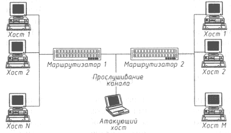

Безопасность >>>
АТАКА НА INTERNETАнализ сетевого трафика Internet
В Internet базовыми протоколами удаленного доступа являются TELNET и FTP (File Transfer Protocol). TELNET - это протокол виртуального терминала (ВТ), позволяющий с удаленных хостов подключаться к серверам Internet в режиме ВТ. FTP - протокол, предназначенный для передачи файлов между удаленными хостами. Для получения доступа к серверу по данным протоколам пользователю необходимо пройти процедуры идентификации и аутентификации. В качестве информации, идентифицирующей пользователя, выступает его имя, а для аутентификации используется пароль. Особенностью протоколов FTP и TELNET является то, что пароли и идентификаторы пользователей передаются по сети в открытом, незашифрованном виде. Таким образом, необходимым и достаточным условием для получения удаленного доступа к хостам по протоколам FTP и TELNET являются имя и пароль пользователя. Одним из способов получения таких паролей и идентификаторов в Internet является анализ сетевого трафика. Этот анализ осуществляется с помощью специальной программы-анализатора пакетов (sniffer), перехватывающей все пакеты, передаваемые по сегменту сети, и выделяющей среди них те, в которых передаются идентификатор пользователя и его пароль. Сетевой анализ протоколов FTP и TELNET показывает, что TELNET разбивает пароль на символы и пересылает их по одному, помещая каждый символ пароля в соответствующий пакет, a FTP, напротив, пересылает пароль целиком в одном пакете.  Рис. 4.1. Схема осуществления анализа сетевого трафика У внимательного читателя, наверное, уже возник вопрос, почему разработчики базовых прикладных протоколов Internet не предусмотрели возможностей шифрования передаваемых по сети паролей пользователей. Даже во всеми критикуемой сетевой ОС Novell NetWare 3.12 пароли пользователей никогда не передаются по сети в открытом виде (правда, указанная функция этой ОС не особенно помогает [11]). Видимо, проблема в том, что базовые прикладные протоколы семейства TCP/IP разрабатывались очень давно, в период с конца 60-х до начала 80-х годов, и с тех пор абсолютно не изменились. При этом точка зрения на построение глобальных сетей стала иной. Инфраструктура Сети и ее протоколы разрабатывались исходя, в основном, из соображений надежности связи, но не из соображений безопасности. Мы, пользователи Internet, вынуждены сейчас прибегать к услугам этой устаревшей с точки зрения защищенности глобальной сети. Совершенно очевидно, что вычислительные системы за эти годы сделали колоссальный скачок в своем развитии, существенно изменился и подход к обеспечению информационной безопасности распределенных ВС. Были разработаны различные протоколы обмена, позволяющие защитить сетевое соединение н зашифровать трафик (например, протоколы SSL, SKIP и т. п.). Однако новые протоколы не сменили устаревшие и не стали стандартом для каждого пользователя (за исключением, может быть, SSL, да и то лишь применительно к некоторым Web-транзакциям). К сожалению, процесс перехода на эти протоколы может длиться еще многие годы, так как в Internet централизованное управление сетью отсутствует. А на сегодняшний день подавляющее большинство пользователей продолжают работать со стандартными протоколами семейства TCP/IP, разработанными более 15 лет назад. В результате, как показывают сообщения американских центров по компьютерной безопасности (CERT, СIАС), в последние годы анализ сетевого трафика в сети Internet успешно применяется кракерами, и, согласно материалам специального комитета при конгрессе США, с его помощью в 1993-1994 годах было перехвачено около миллиона паролей для доступа в различные информационные системы.
|